A practical, light-theme, screenshot-based operating manual for daily ERP work, master setup, billing, purchase requisitions, inventory, HRM, MAKE, shipping, website administration, users, settings, and email.
DocumentFormal User Guide
Version1.4.0
Generated22 May 2026
How to Use This Guide
Read by module or by workflow
For new users
Start with Dashboard, Masters, Products, Billing, and Purchase Requisitions. These explain the daily operating flow.
For managers
Focus on approvals, reports, user groups, purchase requisitions, damaged goods, and settings.
For administrators
Review users, permissions, model rules, product attributes, print settings, backups, and integration settings.
For auditors
Use requisition history, bill audit, voucher records, reports, and supplier/customer ledgers for verification.
The screenshots in this document are fresh light-theme LE-SOFT application screens captured for this guide. Some screens may show documentation sample data, but the feature controls and workflows are the same in production.
Contents
Visual walkthrough
01Dashboard and Daily Overview
02Masters Hub
03Product List and Product Search
04Creating and Editing Products
05Account Groups
06Ledgers and Supplier Accounts
07Stock Groups and Category Tree
08Units of Measurement
09Supplier Management
10Purchase Requisitions
11Billing and POS
12Bill History
13Pending Billing Approvals
14Quotations
15Vouchers
16Reports
17HRM Dashboard
18Employee Management
19Attendance
20Leave Management
21Payroll
22MAKE Production Dashboard
23Place MAKE Order
24Track MAKE Orders
25Shipping Dashboard
26Website Admin
27User Management
28User Groups and Permissions
29Settings
30Email and Campaigns
Section 01
Dashboard and Daily Overview
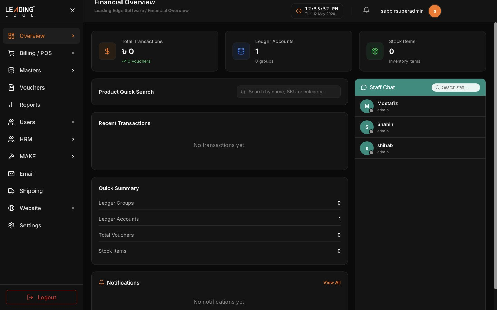
Dashboard and Daily Overview - fresh light-theme screenshot from LE-SOFT.
The dashboard is the first working screen after login. It gives the operator a quick understanding of the business position before opening individual modules.
Feature controls shown
Use the summary cards to review sales, stock, pending work, active users, and other operational totals.
Use the product search or quick lookup area to find products without opening the full product master page.
Use quick action cards to move directly into common tasks such as billing, products, reports, users, or settings.
Use the notification bell to open system alerts. Alerts can redirect to the exact page that needs action.
Use chat or communication tools from the shell when coordination with another user is needed.
What to do in the software
Start the day from the dashboard.
Check summary cards and pending alerts.
Search for a product or open the relevant module from the sidebar.
Use notifications and chat for urgent follow-up work.
Section 02
Masters Hub
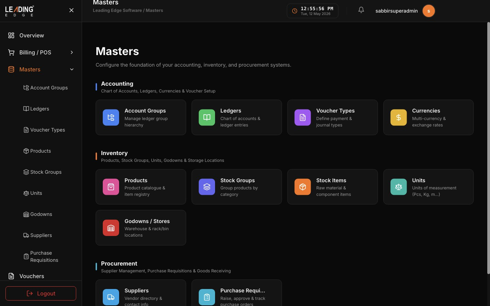
Masters Hub - fresh light-theme screenshot from LE-SOFT.
Masters is the control room for accounting, inventory, procurement, suppliers, products, and warehouse setup.
Feature controls shown
Open Account Groups before creating ledgers, because every ledger must belong to a group.
Create Units, Stock Groups, Godowns, and Products before using billing or purchase requisitions.
Open Suppliers to manage vendor ledgers, contact details, settlements, and purchase history.
Open Purchase Requisitions to request products and move them through approval, audit, purchase, receipt, and stock completion.
What to do in the software
Create master data first.
Then create transactions such as bills, purchase bills, and requisitions.
Use reports to verify the effect of the transactions.
Section 03
Product List and Product Search
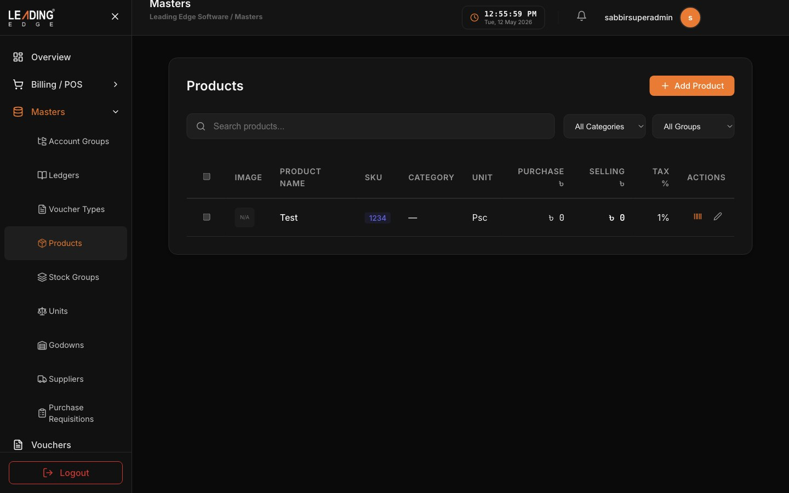
Product List and Product Search - fresh light-theme screenshot from LE-SOFT.
The product list is the main catalogue screen. It helps users find, inspect, and manage products before selling, purchasing, or checking stock.
Feature controls shown
Use search to find products by name, SKU, model number, stock group, or other available product identifiers.
Use the action buttons to open the product ledger, edit product information, or manage records if your user group has permission.
Check product stock, unit, stock group, and pricing before using the product in a bill or purchase requisition.
Open Product Ledger when you need the full product history, supplier links, damage records, and purchase/sales movement.
What to do in the software
Search for the product.
Open the ledger for full history or edit the product if master data needs correction.
Use product summary from requisition screens before adding the product to a purchase request.
Section 04
Creating and Editing Products
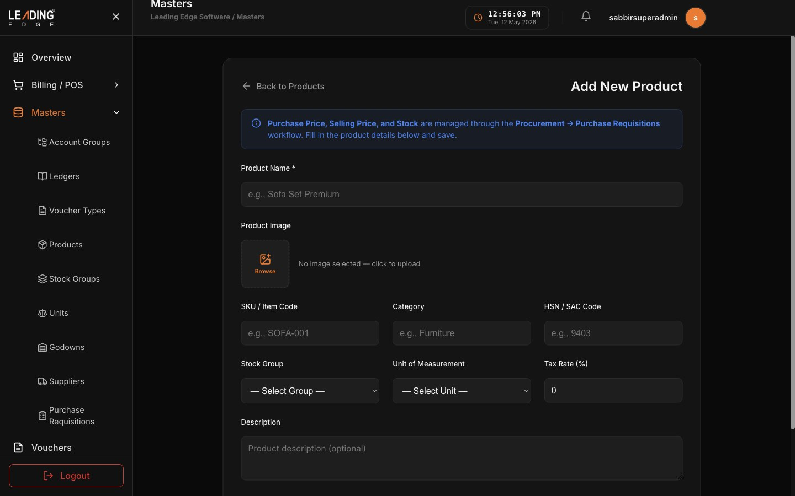
Creating and Editing Products - fresh light-theme screenshot from LE-SOFT.
The product form stores product identity, categorisation, stock location, pricing, supplier/import data, images, and product attributes.
Feature controls shown
The model number is generated from model rules and should not be typed manually.
Choose the product origin, stock group, unit, and godown carefully because these fields affect reporting and model generation.
Imported product creation should be restricted to Super Admin or approved users.
Use product attributes for flexible specifications such as size, color, finish, material, wattage, or model family.
Use image gallery fields to keep visual reference images for the product.
What to do in the software
Create product origins and model rules first.
Create stock groups and units.
Create the product and allow the system to generate the model number.
Add supplier/import information and product attributes.
Section 05
Account Groups
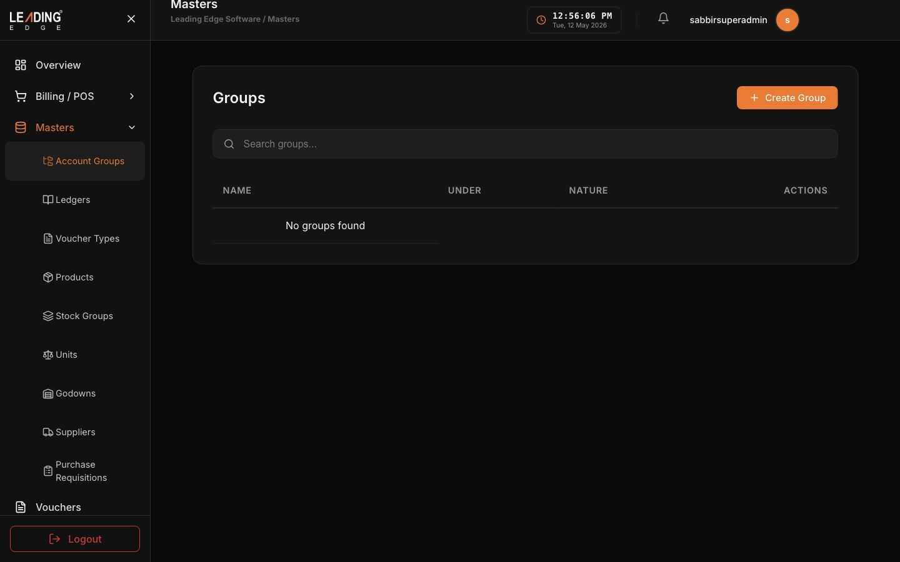
Account Groups - fresh light-theme screenshot from LE-SOFT.
Account groups organise ledgers into accounting categories such as Assets, Liabilities, Income, and Expenses.
Feature controls shown
Create parent groups before creating child groups.
Use correct nature because financial reports depend on group classification.
Keep group names clear and consistent to avoid confusion in trial balance and ledger reports.
What to do in the software
Create the group hierarchy.
Create ledgers under the correct group.
Use reports to verify account placement.
Section 06
Ledgers and Supplier Accounts
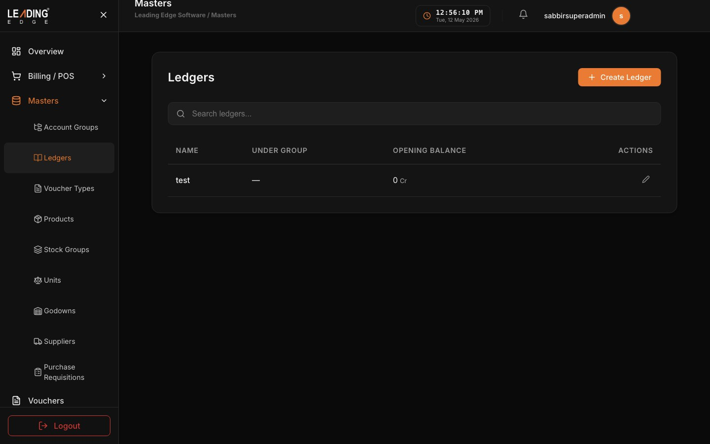
Ledgers and Supplier Accounts - fresh light-theme screenshot from LE-SOFT.
Ledgers are the accounting accounts used for suppliers, customers, cash, bank, income, expense, and adjustment entries.
Feature controls shown
Supplier ledgers should be created under the proper creditor group.
Opening balances should be entered carefully because they affect financial reports.
Ledger details can be used to inspect related transactions and outstanding balances.
What to do in the software
Create the ledger with the correct group.
Enter opening balance if applicable.
Use the supplier page for vendor-specific management.
Section 07
Stock Groups and Category Tree
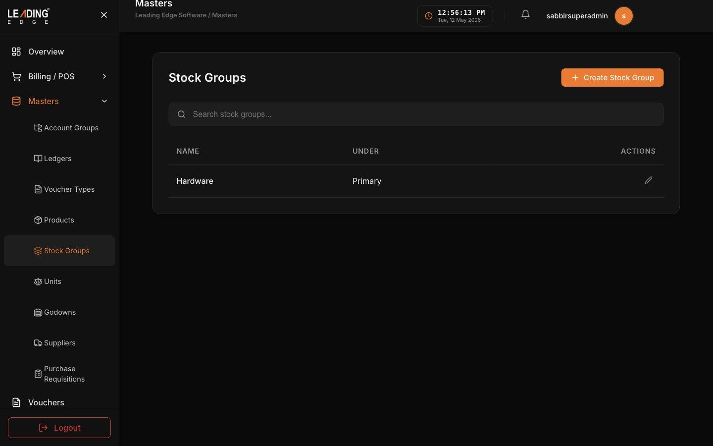
Stock Groups and Category Tree - fresh light-theme screenshot from LE-SOFT.
Stock groups define the product category structure. They should represent the way inventory is actually organised.
Feature controls shown
Use parent and child groups to create a visual hierarchy, such as Light > Chandelier.
Assign every product to the correct stock group for accurate stock reports.
Use the tree view to confirm that child groups are under the intended parent.
What to do in the software
Create broad parent groups.
Create child groups under each parent.
Assign products to the correct child group.
Section 08
Units of Measurement
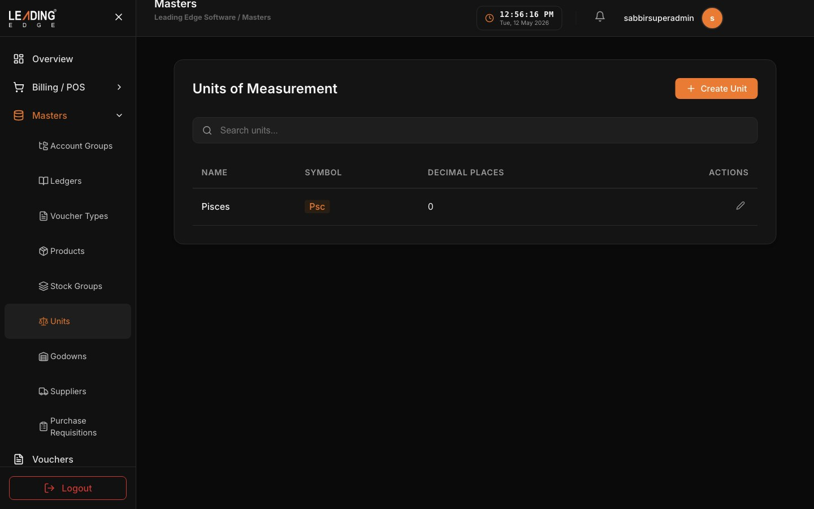
Units of Measurement - fresh light-theme screenshot from LE-SOFT.
Units standardise quantities across products, purchase requisitions, billing, and reports.
Feature controls shown
Create units such as piece, box, kg, meter, liter, or set.
Use short symbols for compact display in tables and print formats.
Choose the desired unit while creating products so requisition quantities use the correct unit automatically.
What to do in the software
Create all common units.
Assign unit to product.
Use the product in bills and requisitions.
Section 09
Supplier Management
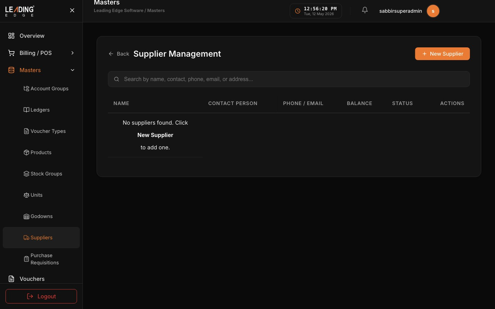
Supplier Management - fresh light-theme screenshot from LE-SOFT.
Use supplier ledgers to track purchase bills and settlement status.
Maintain contact person, phone, email, and notes so the purchase team can follow up quickly.
Supplier details entered during purchase requisitions should connect back to the supplier ledger wherever possible.
What to do in the software
Create supplier ledger.
Use supplier in purchase bill or requisition estimate.
Review supplier ledger for payments and purchase history.
Section 10
Purchase Requisitions
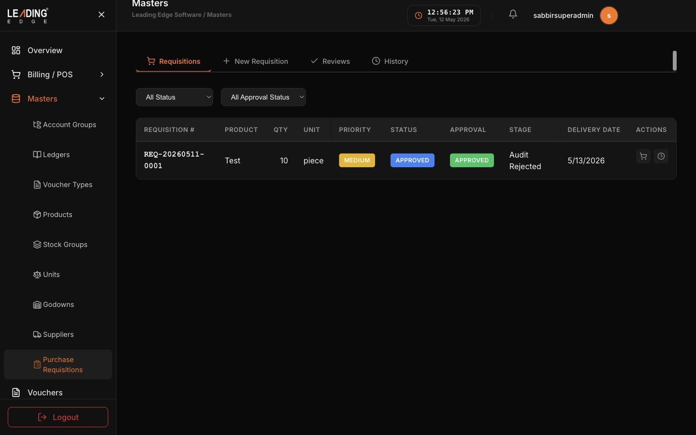
Purchase Requisitions - fresh light-theme screenshot from LE-SOFT.
Purchase requisitions control the request-to-purchase process. A requisition can contain multiple products and should move through approval, audit, purchase, receipt, and completion.
Feature controls shown
Store users create the requisition and add product lines.
Use the product summary button before adding a product to check stock, last purchase price, last purchase date, and sales history.
Store Head reviews and approves the request.
Accounts adds supplier or vendor information and approximate purchase price.
Audit reviews estimates and adds justification.
Director approves or rejects the requisition.
Purchase department records purchase details and prints the requisition when approved.
Receiving and Inventory complete goods receipt, damage transfer if needed, and stock posting.
What to do in the software
Create requisition with product lines.
Review product summary for each important item.
Move the requisition step by step through the approval workflow.
Use View to see product lines, quantity, supplier, estimate, previous price, and history.
Print only after director approval.
Section 11
Billing and POS
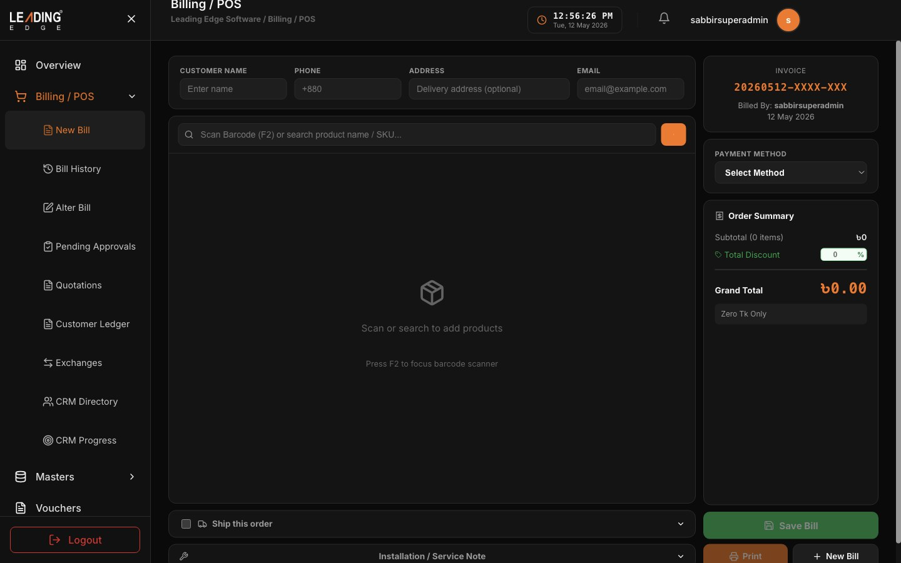
Billing and POS - fresh light-theme screenshot from LE-SOFT.
Billing is used for sales invoice creation. It combines customer selection, product search, item lines, payment method, stock deduction, and receipt printing.
Feature controls shown
Search products and add them to the bill.
Select or create the customer before completing the invoice.
Review quantity, rate, discount, tax, and total before saving.
Use payment methods such as cash, card, bank, or MFS depending on configuration.
After saving, the bill affects customer ledger and product stock.
What to do in the software
Search customer or create customer.
Add products to invoice.
Confirm totals and payment method.
Save and print the bill.
Section 12
Bill History
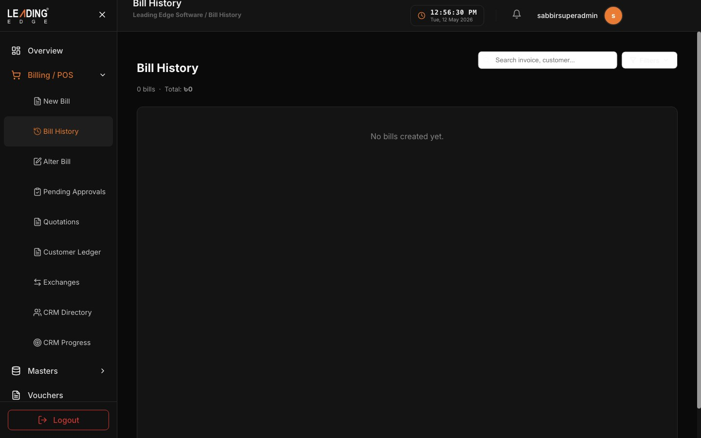
Bill History - fresh light-theme screenshot from LE-SOFT.
Bill history helps users search previous invoices, inspect bill details, reprint bills, and verify customer activity.
Feature controls shown
Search by customer, invoice number, date, or amount where available.
Open bill details before making any alteration.
Use reprint when a customer needs another copy.
Use exchanges or customer ledger to track post-sale activity.
What to do in the software
Find the bill.
Open details.
Reprint, alter, or inspect as permitted.
Section 13
Pending Billing Approvals
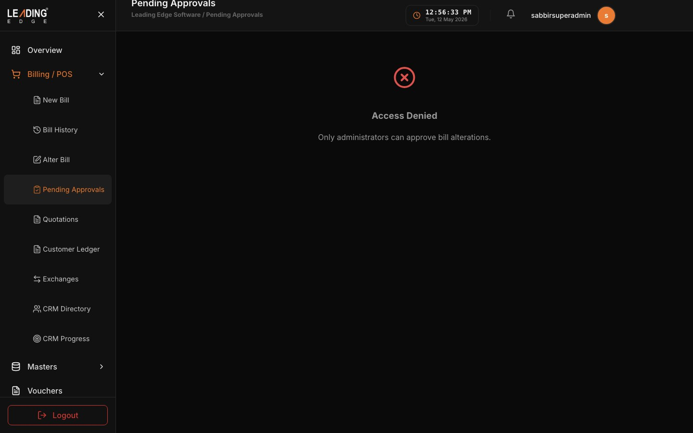
Pending Billing Approvals - fresh light-theme screenshot from LE-SOFT.
Pending approvals are used when controlled billing actions need management review.
Feature controls shown
Review the bill change or request before approving.
Approve only after checking customer, items, discounts, and amount changes.
Reject or request correction when data is incomplete.
Every approval decision should be auditable.
What to do in the software
Open pending item.
Review old and new values.
Approve or reject.
Section 14
Quotations
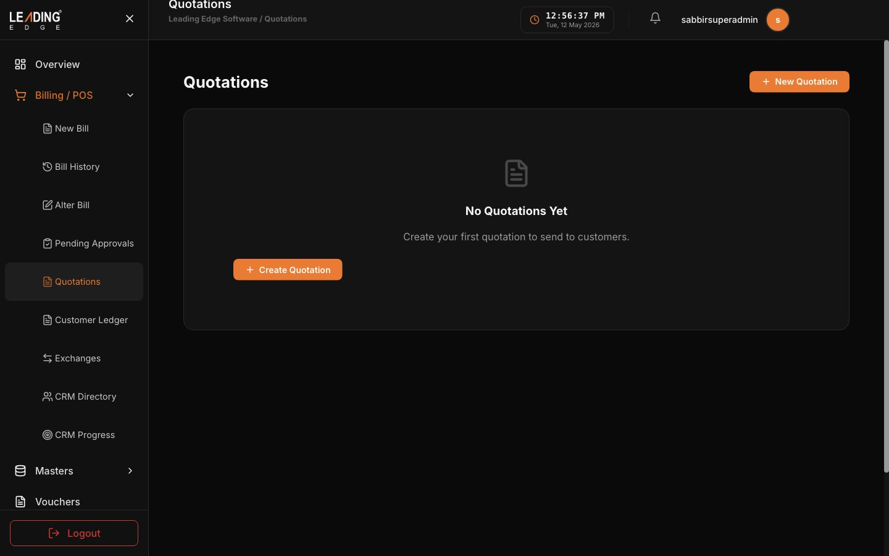
Quotations - fresh light-theme screenshot from LE-SOFT.
Quotations are used before a confirmed sale. They help prepare formal offers with products, quantities, prices, and validity.
Feature controls shown
Create quotation before billing when the customer has not confirmed the order.
Add products or custom lines.
Preview or print the quotation before sharing.
Convert accepted quotations into billing workflow where supported.
What to do in the software
Create quotation.
Add customer and line items.
Preview and print.
Follow up through CRM or billing.
Section 15
Vouchers
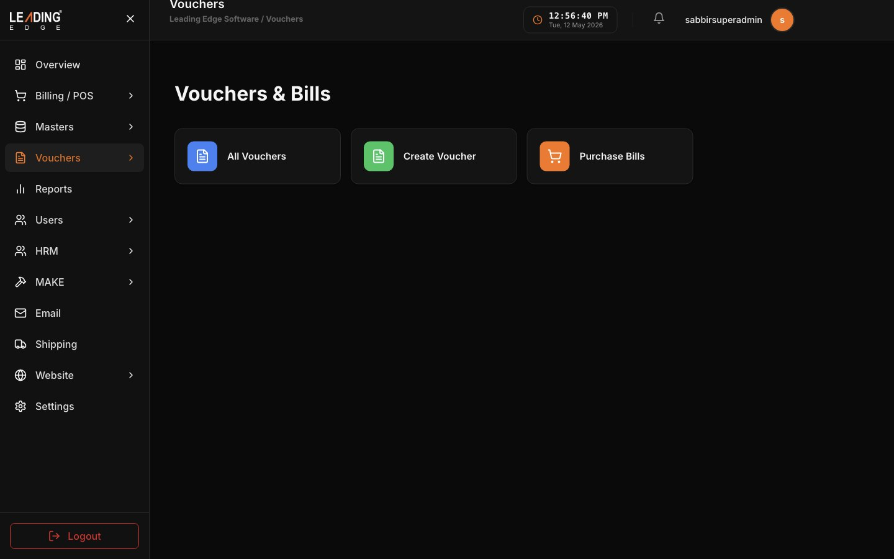
Vouchers - fresh light-theme screenshot from LE-SOFT.
Vouchers record accounting transactions such as payments, receipts, journals, contra entries, and adjustments.
Feature controls shown
Select voucher type and date carefully.
Choose debit and credit ledgers correctly.
Use narration to make future audit easy.
Reports such as trial balance and day book depend on voucher accuracy.
What to do in the software
Create voucher header.
Add debit and credit lines.
Review totals.
Save and verify in reports.
Section 16
Reports
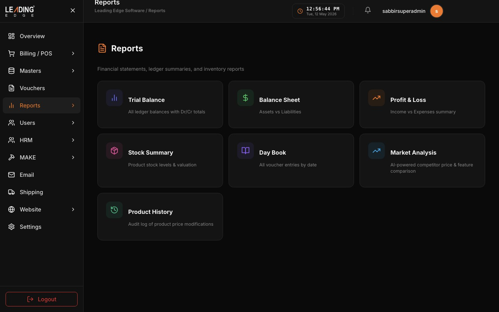
Reports - fresh light-theme screenshot from LE-SOFT.
Reports provide financial, stock, sales, and product insight for decision making.
Feature controls shown
Use Trial Balance to verify accounting balances.
Use Profit and Loss and Balance Sheet for financial position.
Use Stock Summary to inspect quantity and inventory value.
Use Product History and Market Analysis to review pricing and market movement.
Use date filters before exporting reports.
What to do in the software
Choose report.
Set date range or filter.
Review totals.
Export or print if required.
Section 17
HRM Dashboard
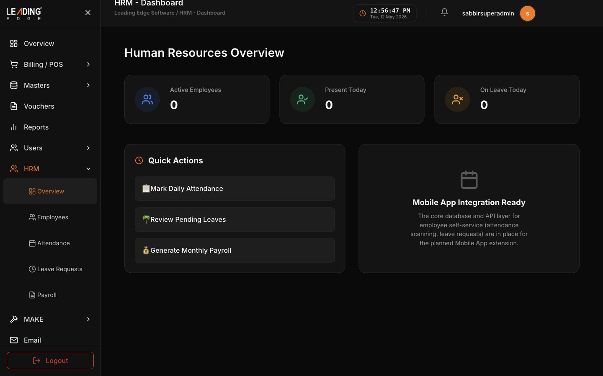
HRM Dashboard - fresh light-theme screenshot from LE-SOFT.
The HRM dashboard gives an overview of employees, attendance, leaves, and payroll activity.
Feature controls shown
Review employee count and attendance summary.
Check pending leave requests.
Open payroll or employee list from shortcuts.
What to do in the software
Open HRM dashboard.
Check alerts and summaries.
Open the specific HRM page for action.
Section 18
Employee Management
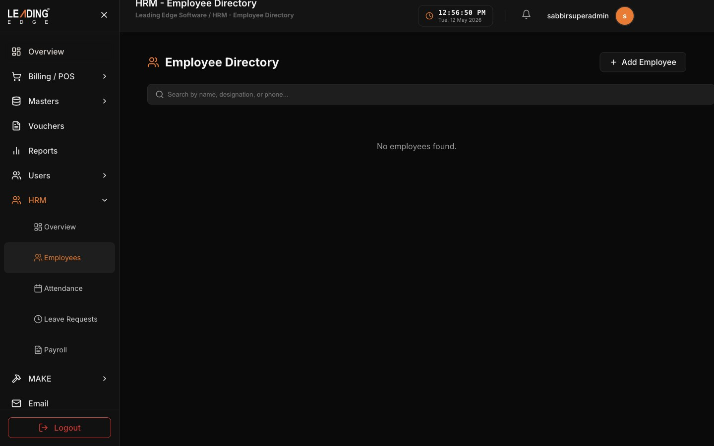
Employee Management - fresh light-theme screenshot from LE-SOFT.
Employee management stores staff records, department, designation, contact, salary, and active status.
Feature controls shown
Create employees before recording attendance or payroll.
Keep employee code unique and readable.
Deactivate employees instead of deleting when history is needed.
What to do in the software
Create employee.
Maintain profile and employment details.
Use employee in attendance, leave, and payroll.
Section 19
Attendance
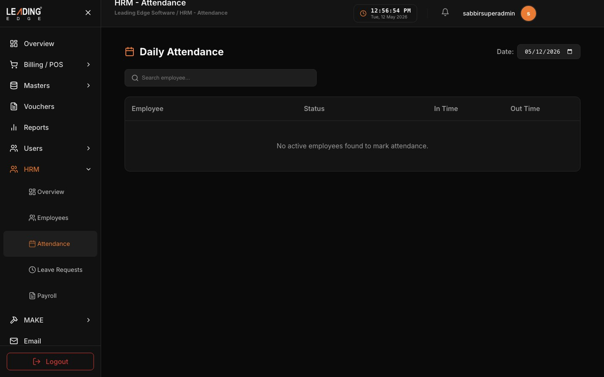
Attendance - fresh light-theme screenshot from LE-SOFT.
Attendance records check-in, check-out, working hours, and exceptions.
Feature controls shown
Use daily attendance to track staff presence.
Correct attendance only with proper permission.
Use attendance data during payroll review.
What to do in the software
Select date.
Review employee attendance.
Adjust records if required and permitted.
Section 20
Leave Management
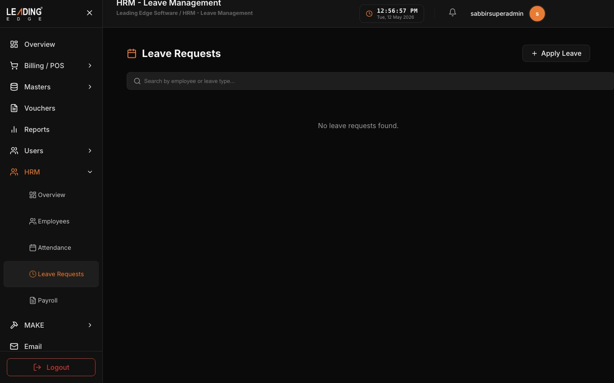
Leave Management - fresh light-theme screenshot from LE-SOFT.
Leave management keeps employee leave requests and approval status in one place.
Feature controls shown
Review leave reason and dates before approval.
Approve or reject based on company policy.
Use history to check previous leave activity.
What to do in the software
Open leave request.
Review dates and reason.
Approve or reject.
Section 21
Payroll
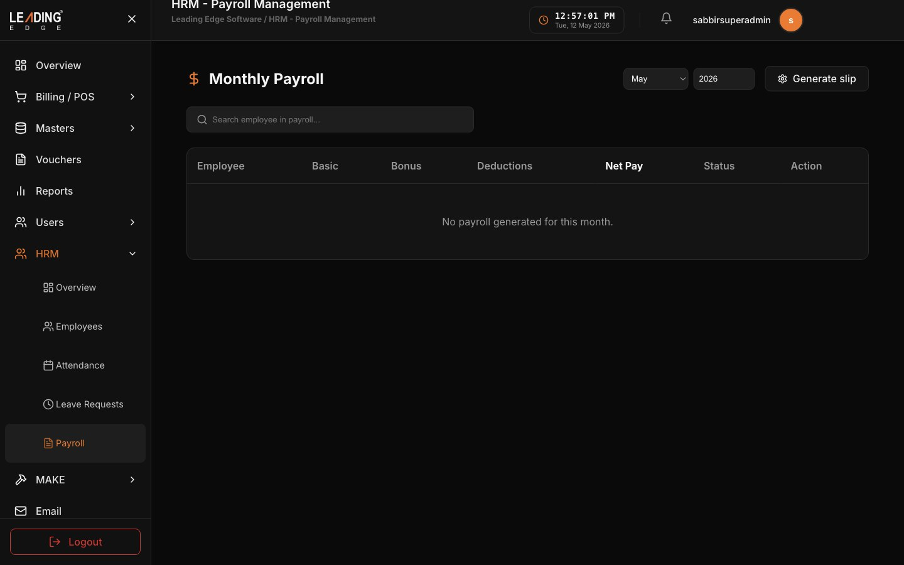
Payroll - fresh light-theme screenshot from LE-SOFT.
Payroll summarizes salary calculation, deductions, bonuses, and net pay.
Feature controls shown
Confirm attendance and leave records before payroll finalization.
Review salary components carefully.
Export or print payroll records for company files.
What to do in the software
Select payroll period.
Review employee salary details.
Finalize or export payroll.
Section 22
MAKE Production Dashboard
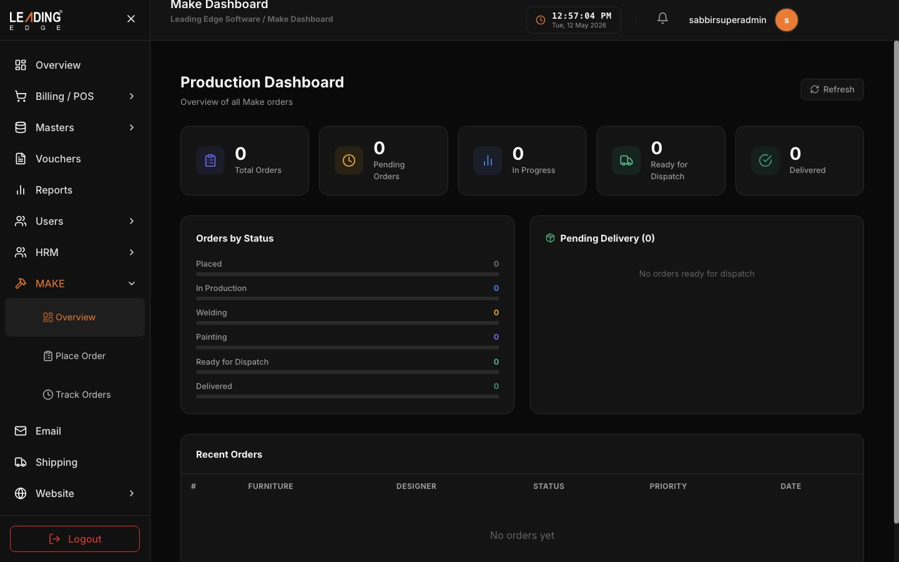
MAKE Production Dashboard - fresh light-theme screenshot from LE-SOFT.
MAKE tracks custom production or manufacturing orders from request to completion.
Feature controls shown
Use summary cards to check production load.
Open pending orders for follow-up.
Track status across production stages.
What to do in the software
Review production dashboard.
Open orders needing attention.
Update status from the tracking page.
Section 23
Place MAKE Order
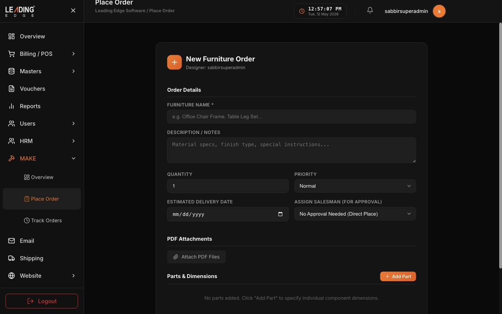
Place MAKE Order - fresh light-theme screenshot from LE-SOFT.
The place order screen creates production orders with customer, product, material, delivery, and instruction details.
Feature controls shown
Add customer and order details.
Enter measurements, material, and deadline accurately.
Use notes for production-specific instructions.
What to do in the software
Create MAKE order.
Assign details and deadline.
Save and track from the production board.
Section 24
Track MAKE Orders
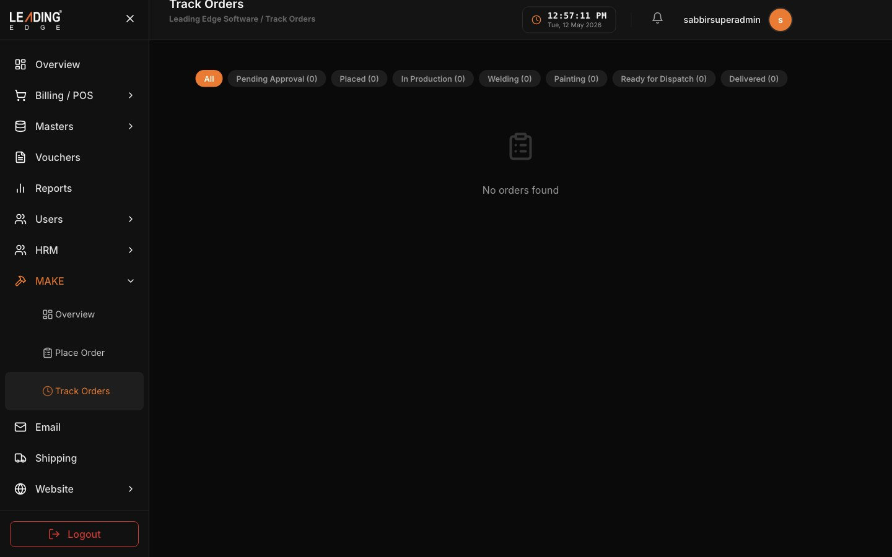
Track MAKE Orders - fresh light-theme screenshot from LE-SOFT.
Track Orders shows current production progress and status updates.
Feature controls shown
Filter by status, priority, or assigned user where available.
Update production stage as work moves forward.
Use history to identify delays.
What to do in the software
Find the order.
Open or update status.
Record meaningful notes when status changes.
Section 25
Shipping Dashboard
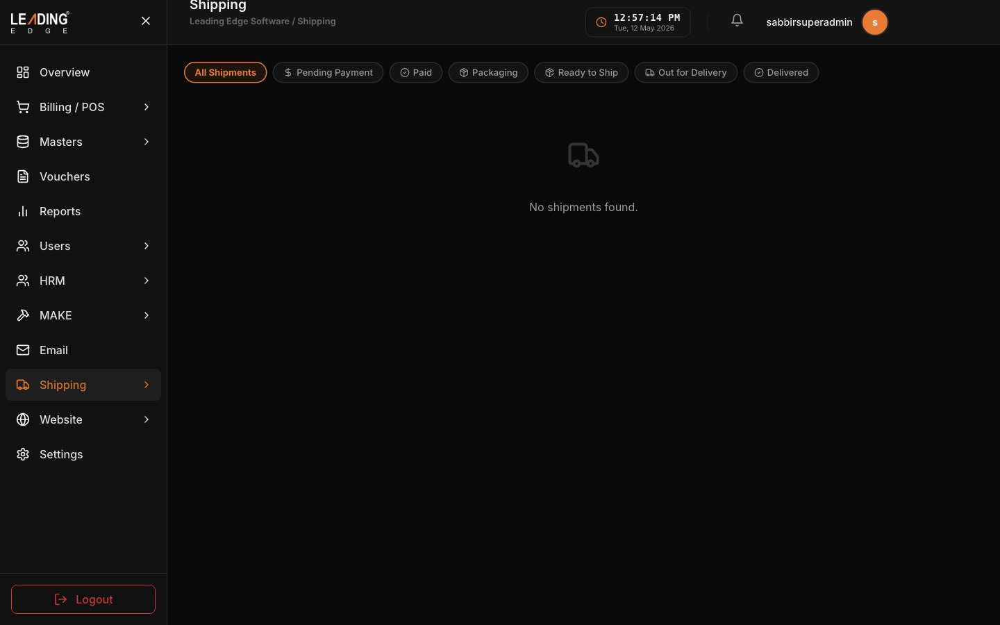
Shipping Dashboard - fresh light-theme screenshot from LE-SOFT.
Shipping manages delivery status after billing or order completion.
Feature controls shown
Review pending payment, packed, dispatched, and delivered shipments.
Update shipping status as goods move.
Keep delivery notes, vehicle, and staff details where required.
What to do in the software
Open shipping record.
Verify payment and package readiness.
Update dispatch and delivery status.
Section 26
Website Admin
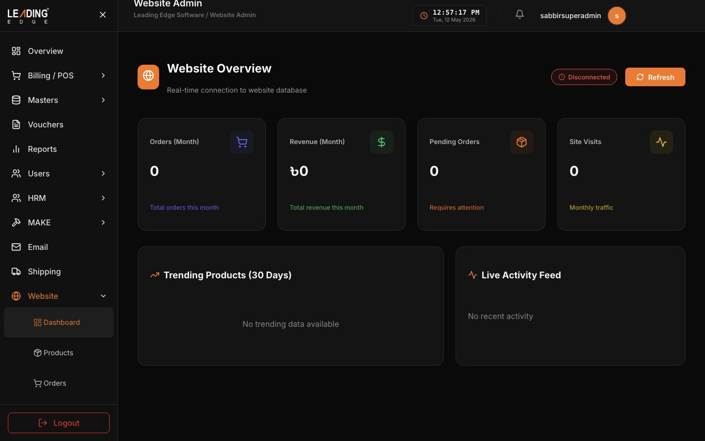
Website Admin - fresh light-theme screenshot from LE-SOFT.
Website Admin connects the desktop ERP with website commerce and content management.
Configure barcode and print page settings per print option.
Manage Supabase admin key and database backup options carefully.
Set auto logout, theme, and other device-level preferences.
Only admin-level users should modify system settings.
What to do in the software
Open Settings.
Change only the required setting.
Test the related module after saving.
Section 30
Email and Campaigns
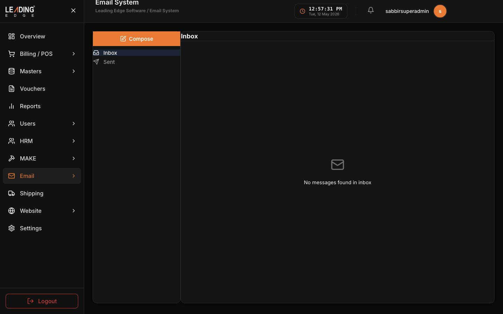
Email and Campaigns - fresh light-theme screenshot from LE-SOFT.
The email module is used for internal/outbound email and campaign-style communication.
Feature controls shown
Prepare campaign content and recipients before sending.
Avoid sending large volumes too quickly because email providers can block or throttle bulk mail.
Use proper unsubscribe, sender identity, and recipient list hygiene for deliverability.
Track sent status and failed deliveries where available.
What to do in the software
Prepare recipient list.
Create email content.
Send in controlled batches.
Review delivery status.
Permission and Safety Notes
Administrative guidance
Area
Recommended Control
Reason
Product creation
Imported products should be restricted to Super Admin. Local products can be allowed for approved store managers.
Product identity, supplier, and import records affect purchasing and reporting.
Purchase requisitions
Each workflow step should be assigned to the correct department group.
This keeps responsibility clear and makes approval history reliable.
Damaged goods
Only inventory managers, admins, or specifically approved groups should transfer or write off damaged stock.
Damaged goods affect usable quantity and financial stock value.
User groups
Use group descriptions and disable groups when access must be paused temporarily.
This is safer than deleting groups that may be linked to users or history.
Settings
Limit system settings, database keys, backup, and print configuration to administrators.
Incorrect settings can affect all users on the device or company dataset.
Daily Operating Checklist
Suggested routine
Start of Day
Open Dashboard and check summary cards.
Review notifications and pending approvals.
Check low stock alerts and urgent purchase requisitions.
Confirm active users and system readiness if you are an admin.
End of Day
Review billing history and day book.
Check pending requisitions, shipping, and MAKE orders.
Review damaged goods and low stock reports.
Export or print reports if required by management.
For critical data such as stock, supplier balances, and purchase approvals, always use the system reports and ledgers instead of relying only on screen totals.